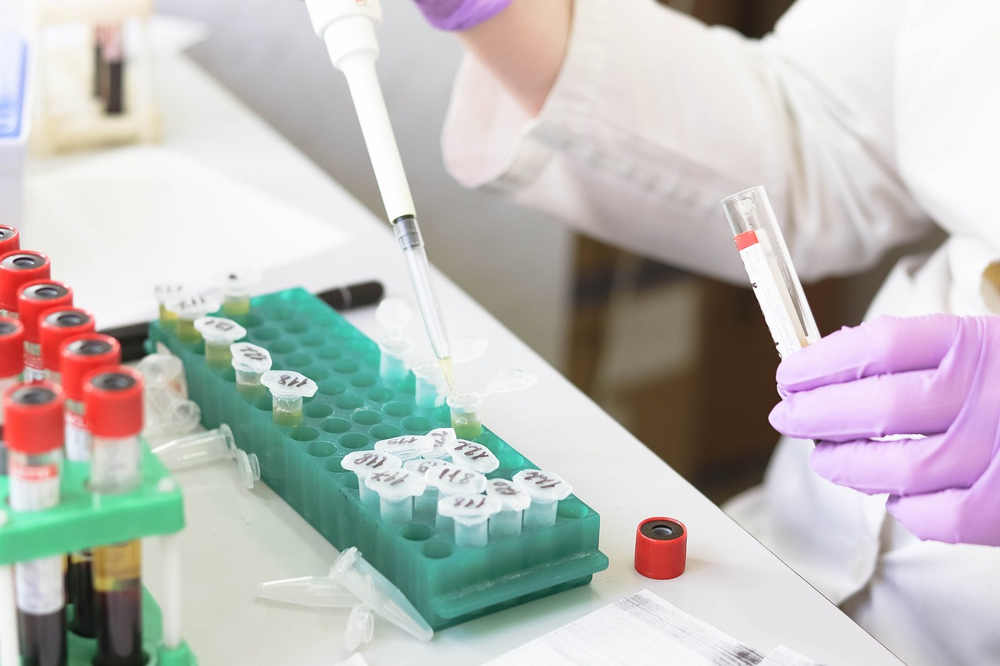
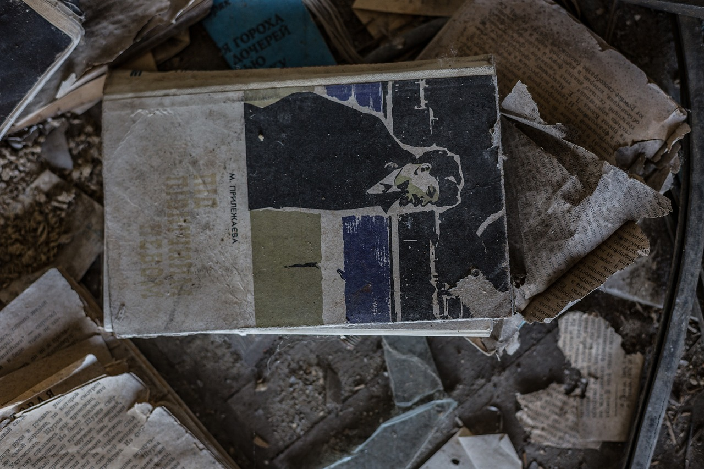
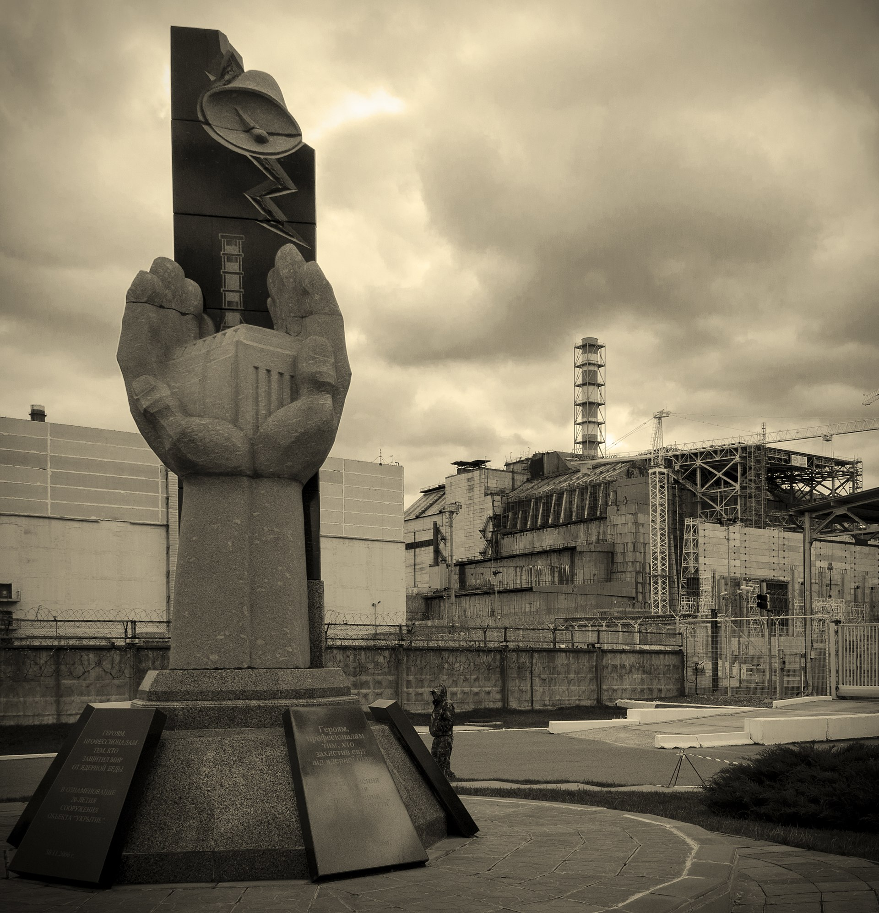
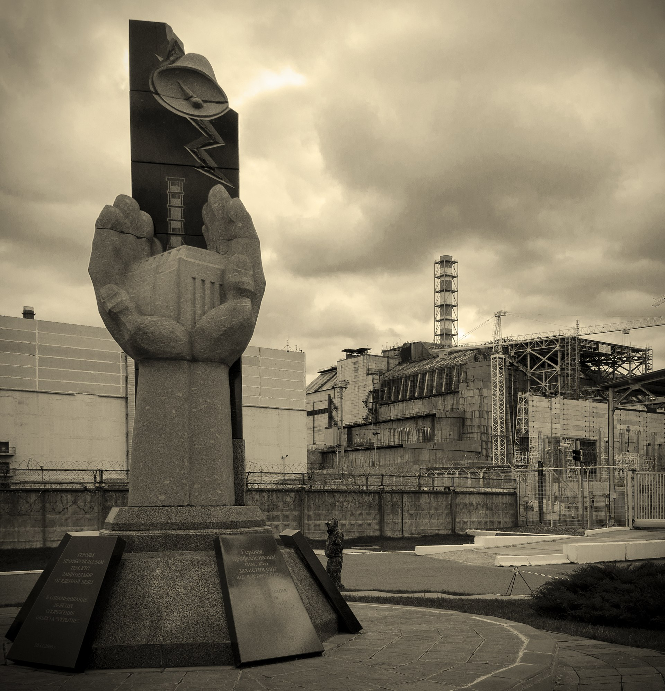

Чорнобиль
Проект сайту про Чорнобиль призначений для надання збалансованої та інформативної платформи щодо подій, пов'язаних з Чорнобильською катастрофою. Мета проекту полягає у поширенні світового розуміння про трагедію, її вплив на людей, навколишнє середовище та науку.
Припять до аварії
Припять після аварії
Історія
Перед Чорнобильською катастрофою, атомна електростанція у Чорнобилі, що знаходилася на території колишнього Союзу Радянських Соціалістичних Республік (СРСР), була однією з найбільших у світі. Вона складалася з чотирьох реакторів, і 26 квітня 1986 року, під час тестування на одному з них - четвертому - сталася катастрофа, яка призвела до викиду радіоактивних речовин у навколишнє середовище.
Події 26 квітня 1986 року
Під час тестування в реакторі №4, виникла послідовність помилок і недоліків, які призвели до нестабільності реактора. О 1:23 за місцевим часом, відбулася величезна експлозія, яка знищила верхню частину реактора та його оболонку. Це призвело до викиду величезної кількості радіоактивного матеріалу у повітря, який рознісся на великі відстані.
Наслідки
Наслідки Чорнобильської катастрофи були драматичними. Загибель і травми від радіації стали реальністю для багатьох людей, які були причетні до ліквідації наслідків аварії та мешкали в зоні відчуження. Більше того, радіоактивне забруднення залишило значний вплив на здоров'я людей, навколишнє середовище та сільськогосподарські угіддя на значних територіях.
Людські жертви та травми
1.Померлі: Офіційна кількість смертей від радіаційного впливу Чорнобильської катастрофи є предметом дискусій. Однак вона включає сотні та тисячі людей, які загинули внаслідок радіаційних хвороб, таких як рак, а також через інші причини, пов'язані з аварією.
2.Постраждалі: Тисячі людей отримали серйозні травми та хвороби внаслідок впливу радіації, серед яких були ліквідатори аварії, мешканці прилеглих територій і люди, які випадково потрапили під впливом радіації.
Екологічні наслідки
1.Забруднення навколишнього середовища: Радіоактивні речовини, що викинулися внаслідок аварії, забруднили не лише повітря, але і ґрунт, воду та рослинність в широкому радіусі навколо Чорнобиля.
2.Зона відчуження: Була створена "зона відчуження" в радіусі 30 кілометрів навколо Чорнобиля, де людям заборонено проживати через високий рівень радіації. Ця зона є досі евакуйованою.
Соціальні та економічні наслідки
1.Втрати в сільському господарстві: Чорнобильська катастрофа призвела до забруднення сільськогосподарських угідь та втрат врожаю, що вплинуло на сільськогосподарські ринки та економіку регіону.
2.Економічні втрати: Урядові програми ліквідації наслідків аварії, втрати виробництва та екологічні витрати вимагають значних фінансових ресурсів, які могли б бути використані для інших потреб.
Наслідки для ядерної енергетики
Зміна уявлень про безпеку: Чорнобильська катастрофа призвела до переосмислення підходів до безпеки в атомній енергетиці та зміни підходів до дизайну та експлуатації ядерних реакторів.
Вплив на розвиток атомної енергетики: Катастрофа значно вплинула на розвиток атомної енергетики в світі, спричинивши зупинку будівництва нових реакторів у деяких країнах та зміну уявлень щодо ролі ядерної енергетики в енергетичному міксі.
Спадщина
Чорнобильська катастрофа відкрила очі світу на потенційні небезпеки атомної енергії та необхідність посилення безпеки в атомних електростанціях. Вона стала нагадуванням про те, як важливо мати належні заходи безпеки та контролювати ризики в ядерній промисловості.
Чорнобильська катастрофа - це нагадування про важливість безпеки та відповідального використання технологій. Її наслідки продовжують впливати на життя людей та навколишнє середовище і донині, нагадуючи про непередбачувані наслідки людської помилки і техногенних аварій.
Події, що передували аварії та її наслідки.
Перед Чорнобильською катастрофою були декілька ключових подій, які сприяли цій трагедії та її наслідкам:
- Технічні недоліки: У реакторі №4 Чорнобильської атомної електростанції були виявлені ряд технічних недоліків та дефектів у дизайні, а також недоліки у системі безпеки, які створили умови для потенційно небезпечного виробничого процесу.
- Експериментальні дослідження: 26 квітня 1986 року, під час планового тестування в реакторі, було прийнято ряд рішень, які порушили безпекові протоколи. Ці рішення призвели до нестабільності реактора та сприяли подальшій катастрофі.
- Недоліки у реагуванні: Після вибуху у реакторі, урядові та промислові структури зазнали деяких недоліків у швидкому та ефективному реагуванні на аварійну ситуацію. Це призвело до затримки в реагуванні та поширенні радіаційного забруднення на великі відстані.
Наслідки
Широкомасштабне радіаційне забруднення: Викид радіоактивних матеріалів призвів до широкого радіаційного забруднення, яке поширилося на великі відстані, негативно вплинувши на здоров'я людей та навколишнє середовище.
Людські жертви та травми: Сотні людей загинули від радіаційних хвороб, тисячі отримали серйозні травми та хвороби, включаючи ліквідаторів аварії та мешканців прилеглих територій.
Екологічні та соціальні наслідки: Забруднення навколишнього середовища та евакуація людей з зони відчуження мали серйозні екологічні та соціальні наслідки, які відчуваються й досі.
Чорнобильська катастрофа стала найбільшою техногенною трагедією у світовій історії та нагадує нам про важливість безпеки в ядерній енергетиці та необхідність управління ризиками в технічних системах.
Відео з моментів аварії та наслідки
Населення та екологія
Вплив на здоров'я населення
1.Радіаційні хвороби: Більше 600 тисяч людей, включаючи ліквідаторів аварії та мешканців прилеглих територій, були піддані радіаційному опроміненню. Це призвело до збільшення випадків онкологічних захворювань, особливо щодо раку щитоподібної залози, лейкемії та інших радіаційно-зумовлених захворювань.
2.Психологічний вплив: Катастрофа також мала значний психологічний вплив на населення, викликаючи страх, тривогу та стрес через невизначеність щодо наслідків радіації для їхнього здоров'я та майбутнього.
Вплив на навколишнє середовище
1.Радіоактивне забруднення: Викиди радіоактивних матеріалів з Чорнобильської аварії призвели до радіоактивного забруднення ґрунту, повітря та води. Це викликало широкомасштабне радіаційне забруднення, яке поширилося на великі відстані від місця аварії.
2.Евакуація та зона відчуження:Зона відчуження була створена на значних територіях навколо Чорнобиля, де заборонено проживання через високий рівень радіаційного забруднення. Тисячі людей були змушені евакуюватися зі своїх домівок.
3.Екологічні наслідки:Радіоактивне забруднення навколишнього середовища має довгострокові наслідки для екосистеми. Воно впливає на рослинність, тваринний світ та біорізноманіття, а також може мати негативний вплив на генетичні характеристики живих організмів.
Чорнобильська катастрофа стала нагадуванням про потенційні небезпеки ядерної енергетики та важливість ретельного контролю та безпеки в атомних електростанціях. Її наслідки відчуваються досі як для людей, так і для навколишнього середовища, нагадуючи про важливість збереження та захисту природних ресурсів для майбутніх поколінь.
Проекти та програми оздоровлення екології
1.Чорнобильський фонд "Укриття" (nuclear-safety-science-fund):
Цей проект був створений для фінансування будівництва нового безпечного конфайнмента (саркофагу) над зруйнованим реактором №4. Новий конфайнмент був завершений і встановлений у 2016 році, що значно зменшило ризики подальших викидів радіації.
2.Програма ООН з навколишнього середовища (UNEP):
UNEP реалізувала кілька проектів, спрямованих на зменшення радіоактивного забруднення та відновлення навколишнього середовища в постраждалих районах. Це включає дослідження впливу радіації на екосистеми та розробку методів їх відновлення.
Програма з оздоровлення лісів:
Лісові екосистеми постраждали від радіоактивного забруднення. Було започатковано кілька програм з моніторингу стану лісів, їх очищення та відновлення, а також з метою запобігання лісовим пожежам, які можуть спричинити подальше розповсюдження радіоактивних матеріалів.
Програми з допомоги постраждалим:
1.Всесвітня організація охорони здоров'я (ВООЗ):
ВООЗ реалізує програми з надання медичної допомоги постраждалим від Чорнобильської катастрофи. Ці програми включають медичне обстеження, лікування та реабілітацію осіб, які зазнали впливу радіації.
2.Дитячий фонд ООН (UNICEF):
UNICEF реалізує програми підтримки дітей, постраждалих від катастрофи. Це включає медичну допомогу, психологічну підтримку, а також освітні програми для дітей, які зазнали впливу радіації.
Національні програми допомоги:
3.Україна, Білорусь та Росія мають власні державні програми для допомоги постраждалим. Ці програми включають надання медичної допомоги, соціальної підтримки та компенсацій постраждалим особам.
Освітні та інформаційні програми:
1.Проекти з підвищення обізнаності:Різні організації та фонди, включаючи Greenpeace та Чорнобильський фонд, реалізують програми, спрямовані на підвищення обізнаності про наслідки катастрофи, методи захисту від радіації та важливість екологічної безпеки.
2 Музеї та меморіали:У Києві та інших містах створено музеї та меморіали, присвячені Чорнобильській катастрофі. Вони виконують освітню функцію, нагадуючи про трагедію та її наслідки для майбутніх поколінь.
Ці проекти та програми є важливими кроками у напрямку подолання наслідків Чорнобильської катастрофи та допомоги постраждалим, а також у забезпеченні екологічної безпеки для майбутніх поколінь.
Сучасний стан екології у зоні відчуження.
Зону відчуження навколо Чорнобильської атомної електростанції (ЧАЕС) частково відновили в природний заповідник, відомий як Природний Заповідник "Чорнобильська Зона". Останні дослідження та спостереження показують, що природа в цій зоні відчуження розквітла в умовах відсутності людського впливу протягом багатьох років. Ось кілька ключових аспектів сучасного стану екології у зоні відчуження:
1.Природне відновлення: У зоні відчуження була спостережена значна активність природного відновлення. Рослинність та тваринний світ знову заселили цей регіон, і біологи документують високий рівень біорізноманіття.
2.Радіоактивне забруднення: Хоча багато радіоактивних матеріалів все ще присутні у грунті та рослинах, рівні радіації в певних частинах зони відчуження значно зменшилися з часом. Однак деякі області залишаються високорадіоактивними і вимагають обмеженого доступу.
3.Екотуризм:Останнім часом у зоні відчуження розвивається екотуризм. Туристи мають можливість відвідати заповідник, спостерігати за дикою природою та досліджувати наслідки Чорнобильської катастрофи.
В цілому, хоча зона відчуження залишається радіоактивною та вимагає обережного підходу, вона також слугує унікальним відкритим лабораторним простором для вивчення ефектів радіації на природні екосистеми та процесів відновлення природи після техногенних катастроф.
Проекти та програми з оздоровлення екології:
1.Чорнобильський заповідник:
- У 2016 році на території зони відчуження був створений Чорнобильський радіаційно-екологічний біосферний заповідник. Заповідник сприяє збереженню біорізноманіття та дослідженню впливу радіації на екосистеми.
2.Ініціативи з дезактивації:
- Відбуваються постійні зусилля з дезактивації територій, щоб зменшити рівень радіоактивного забруднення в населених пунктах та сільськогосподарських угіддях.
Програми допомоги постраждалим:
1.Програми медичної допомоги:
- Всесвітня організація охорони здоров'я (WHO): WHO забезпечує програми медичної допомоги та підтримки для людей, які постраждали від радіаційного опромінення. Програми включають скринінг на рак та інші радіаційно-зумовлені захворювання.
- Проект "International Chernobyl Research and Information Network" (ICRIN): ICRIN працює над покращенням доступу до медичної допомоги та інформації про здоров'я для постраждалих.
Соціально-економічна підтримка:
- Чорнобильський фонд "Відродження": Цей фонд надає фінансову допомогу та підтримку для переселенців та постраждалих сімей. Вони також працюють над покращенням умов життя та забезпеченням робочих місць для переселенців.
- Місцеві та національні урядові програми: Уряд України та сусідніх країн реалізують різноманітні програми з соціальної підтримки, включаючи компенсації, пенсії та інші форми фінансової допомоги для постраждалих.
Освітні та інформаційні програми:
- Проект "Навчання з Чорнобильською спадщиною": Мета цього проекту - підвищення рівня знань про Чорнобильську катастрофу та її наслідки серед молоді та населення. Програми включають освітні матеріали, семінари та виставки.
Міжнародна співпраця:
1. Європейський банк реконструкції та розвитку (ЄБРР):
- ЄБРР фінансує проекти з безпеки, включаючи будівництво нового саркофага над зруйнованим реактором, відомого як Новий безпечний конфайнмент (NSC). Цей проект спрямований на забезпечення довгострокової безпеки та захисту навколишнього середовища.
Чорнобильський Форум:
Чорнобильський Форум, створений ООН, об'єднує різні організації та уряди дл координації міжнародних зусиль з подолання наслідків катастрофи. Форум працює над покращенням координації та ефективності проектів допомоги.
Ці проекти та програми є важливими кроками для відновлення постраждалих територій та підтримки людей, які постраждали від Чорнобильської катастрофи. Вони сприяють оздоровленню екології та забезпеченню належної допомоги постраждалим у довгостроковій перспективі.
Наука та дослідження:

Наукові дослідження щодо Чорнобильської катастрофи привели до численних висновків та відкриттів, які вплинули на розуміння радіаційних наслідків, управління аварійними ситуаціями, а також впливу на здоров'я та навколишнє середовище.
Висновки щодо впливу на здоров'я:
| Рак щитоподібної залози: | Лейкемія та інші види раку: | Психічне здоров'я: |
|---|---|---|
| Дослідження показали значне збільшення випадків раку щитоподібної залози серед дітей і підлітків, які були піддані опроміненню. Це пов'язано з високим рівнем радіоактивного йоду, викинутого під час аварії. | Ліквідатори аварії та інші постраждалі також зазнали підвищеного ризику розвитку лейкемії та інших видів раку. Довгострокові епідеміологічні дослідження підтвердили цей зв'язок. | Окрім фізичних захворювань, постраждалі зазнали значного психологічного стресу та тривоги, що призвело до підвищення рівня депресії, посттравматичного стресового розладу (ПТСР) та інших психічних розладів. |
Висновки щодо екологічного впливу:
| Радіаційне забруднення: | Зона відчуження: | Генетичні мутації: |
|---|---|---|
| Радіоактивне забруднення поширилося на великі території, включаючи частини України, Білорусі, Росії та навіть деякі країни Західної Європи. Основними радіонуклідами були йод-131, цезій-137 та стронцій-90. | Створення зони відчуження призвело до унікального явища: в деяких областях природа почала відновлюватися в умовах відсутності людської діяльності. Вчені відзначили збільшення біорізноманіття та появу рідкісних видів тварин. | Дослідження показали підвищення рівня генетичних мутацій у рослинах і тваринах у зоні відчуження. Це має значення для розуміння впливу радіації на геноми живих організмів. |
Відкриття та вдосконалення в галузі ядерної безпеки:
| Покращення ядерної безпеки: | Система аварійного реагування: | Наукові дослідження та освіта: |
|---|---|---|
| Чорнобильська катастрофа призвела до глобального перегляду стандартів ядерної безпеки. Було введено суворіші регламенти та процедури для запобігання подібним аваріям. | Удосконалено міжнародні системи аварійного реагування та взаємодії. Були створені нові протоколи та системи моніторингу для швидкого реагування на ядерні інциденти. | Сотні тисяч людей були переселені з зон відчуження, що створило значні соціальні та економічні виклики. Були реалізовані численні програми з адаптації та підтримки переселенців. |
Довгострокові соціальні та економічні наслідки:
| Переселення та соціальна адаптація: | Економічні втрати: |
|---|---|
| Сотні тисяч людей були переселені з зон відчуження, що створило значні соціальні та економічні виклики. Були реалізовані численні програми з адаптації та підтримки переселенців. | Витрати на ліквідацію наслідків катастрофи, евакуацію, дезактивацію та соціальну підтримку оцінюються в мільярди доларів, що стало значним тягарем для економіки України та сусідніх країн. |
Чорнобильська катастрофа стала важливим уроком для всього світу, підкресливши необхідність безпеки, підготовки та реагування на ядерні інциденти. Дослідження та висновки, отримані внаслідок цієї трагедії, мають вирішальне значення для майбутнього ядерної енергетики та охорони здоров'я.
Міжнародні наукові програми та співпраця
Чорнобильська програма ООН (UN Chernobyl Program)
- Мета: Надання допомоги постраждалим регіонам та сприяння їхньому соціально-економічному розвитку.
- Організації: Програма була ініційована Організацією Об'єднаних Націй та залучала різні агентства, включаючи Програму розвитку ООН (UNDP), Міжнародне агентство з атомної енергії (МАГАТЕ), Всесвітню організацію охорони здоров'я (ВООЗ) та інші.
- Діяльність: Реалізація проектів, спрямованих на відновлення життєдіяльності в постраждалих регіонах, поліпшення медичного обслуговування, екологічні дослідження та розробка стратегій економічного розвитку.
Чорнобильський фонд «Відродження» (Chernobyl Recovery and Development Programme)
- Мета: Підтримка сталого розвитку постраждалих територій та сприяння економічному зростанню.
- Організації: Програма впроваджувалася спільно з урядом України та міжнародними партнерами, такими як Європейський Союз, Світовий банк та інші донори.
- Діяльність: Відновлення інфраструктури, підтримка малого та середнього бізнесу, розвиток сільського господарства та туризму, а також впровадження програм з охорони здоров'я.
Міжнародна науково-дослідницька програма «Сheckpoint» (Chernobyl Environmental Protection Programme)
- Мета: Дослідження радіоактивного забруднення та його впливу на навколишнє середовище і здоров'я людей.
- Організації: В рамках програми співпрацюють наукові установи та організації з різних країн, зокрема з України, Росії, Білорусі, США та Європейського Союзу.
- Діяльність: Проведення моніторингу радіоактивного забруднення, вивчення його впливу на екосистеми та здоров'я населення, розробка заходів з мінімізації наслідків радіаційного впливу.
Проект EBRD «Укриття» (EBRD Shelter Implementation Plan)
- Мета: Будівництво нового безпечного конфайнменту («Арки») над зруйнованим четвертим реактором Чорнобильської АЕС.
- Організації: Європейський банк реконструкції та розвитку (EBRD) у співпраці з урядом України та міжнародними донорами.
- Діяльність: Реалізація проекту з будівництва нового конфайнменту для запобігання викидам радіоактивних речовин, а також забезпечення безпечного демонтажу старого саркофагу.
Програма МАГАТЕ з вивчення наслідків Чорнобильської аварії (IAEA Chernobyl Project)
- Мета: Оцінка радіологічних, медичних та соціально-економічних наслідків аварії.
- Організації: Міжнародне агентство з атомної енергії (МАГАТЕ) спільно з країнами-учасницями.
- Діяльність: Проведення наукових досліджень, надання технічної допомоги, організація навчальних семінарів та курсів для фахівців у галузі ядерної безпеки та радіаційного захисту.
Висновок
Міжнародна співпраця у вивченні наслідків Чорнобильської катастрофи є важливим елементом для зниження радіоактивного впливу на навколишнє середовище та здоров'я людей. Вона сприяє розвитку нових технологій у сфері ядерної безпеки, обміну знаннями та досвідом, а також підвищенню рівня підготовки фахівців. Ці програми допомагають не лише ліквідувати наслідки минулої катастрофи, але й запобігати подібним трагедіям у майбутньому.
Наукові статті та публікації
Пам'ятки та пам'ятники

Чорнобильська катастрофа залишила глибокий слід у світовій історії, і на її честь створено багато меморіальних об'єктів та музеїв. Ці місця зберігають пам'ять про трагедію, її жертв та героїв-рятувальників, а також слугують нагадуванням про важливість безпеки на ядерних об'єктах.
Меморіальний комплекс "Зірка Полин" у Чорнобилі
Меморіал "Зірка Полин" є одним із головних символів пам'яті про Чорнобильську катастрофу. Розташований у самому місті Чорнобиль, комплекс включає:
-Монумент "Тим, хто врятував світ"– вшанування героїв-ліквідаторів.
-Скульптурні композиції, що відображають трагедію та її наслідки.
Музей Чорнобиля у Києві
Цей музей розташований у Києві та пропонує глибоке занурення в події, що відбулися 26 квітня 1986 року, та їх наслідки. Основні експозиції включають:
-Архівні документи та фотографії
-Особисті речі ліквідаторів та евакуйованих мешканців.
-Моделі та діаграми, що пояснюють технічні аспекти аварії.
-Інтерактивні експонати, які дозволяють відвідувачам більше дізнатися про радіаційне забруднення та його вплив.
Меморіальний комплекс "Парк Слави" у Славутичі
Славутич, місто побудоване для евакуйованих працівників Чорнобильської АЕС, має свій власний меморіальний комплекс. Парк Слави включає:
-Алею пам'яті з іменами загиблих.
-Монументи, присвячені різним аспектам катастрофи та її наслідків.
-Меморіальні дошки та інші знаки пам'яті, розташовані по всьому парку.
Сучасний стан і значення
Меморіали та музеї, присвячені Чорнобильській катастрофі, служать важливими навчальними центрами, які нагадують про небезпеку ядерної енергії, якщо нею неправильно керувати, та про важливість безпеки і захисту довкілля. Вони також виконують важливу роль у збереженні історичної пам'яті та підтримці свідомості про ті жертви, які принесли багато людей.
Ці об'єкти є місцями для роздумів, навчання та усвідомлення важливості глобальної співпраці в питаннях ядерної безпеки та екології.
Додаткова інформація
Фотографії пам'ятників та меморіальних місць.
_(cropped).jpg) 

Безпека та профілактика
Заходи безпеки під час відвідування зони відчуження
Відвідування Чорнобильської зони відчуження може бути безпечним, якщо дотримуватися певних правил та рекомендацій. Ось основні заходи безпеки, які потрібно знати:
| Отримання дозволу: | Дозиметричний контроль: | Зміна одягу: | Поведінка та обмеження: | Медичні рекомендації: | Поведінка з тваринами: |
|---|---|---|---|---|---|
| Для відвідування зони відчуження необхідно отримати офіційний дозвіл від відповідних українських органів влади. Це можна зробити через ліцензовані турфірми, які організовують поїздки до Чорнобиля. | Використовуйте дозиметри для контролю рівня радіації під час відвідування. Багато туроператорів надають дозиметри в оренду. | Після повернення з зони відчуження рекомендується змінити одяг та взуття, які використовували під час відвідування, і ретельно їх випрати. | Не торкатися: Уникайте торкання поверхонь, об'єктів та рослин, особливо в місцях з високим рівнем забруднення. Не сидіти на землі: Не сидіть на землі або траві, щоб уникнути контакту з радіоактивним пилом. Не виносити предмети: Не виносьте зони відчуження жодних предметів як сувеніри. Це незаконно та небезпечно. | Консультація з лікарем: Перед поїздкою проконсультуйтеся з лікарем, особливо якщо маєте хронічні захворювання або інші медичні протипоказання. Перший медичний набір: Візьміть з собою аптечку з необхідними медикаментами на випадок невідкладних ситуацій. | Уникання контактів: Не контактуйте з тваринами в зоні відчуження, оскільки вони можуть бути переносниками радіоактивних частинок. |
Дотримання цих заходів допоможе забезпечити безпеку під час відвідування зони відчуження та мінімізувати ризики для здоров'я.
Для отримання більш детальної інформації про безпечне відвідування Чорнобильської зони можна звернутися до ліцензованих туроператорів або відвідати офіційні сайти, такі як Chernobyl Tour або https://visitukraine.today/cho
Рекомендації щодо захисту здоров'я та профілактики впливу радіації
При відвідуванні зон з підвищеною радіацією, таких як Чорнобильська зона відчуження, важливо дотримуватись певних рекомендацій для захисту здоров'я. Ось ключові заходи та рекомендації, які допоможуть мінімізувати вплив радіації:
1. Загальні рекомендації
- Отримання дозволу: Завжди отримуйте офіційний дозвіл для відвідування зони відчуження через ліцензовані турфірми.
2.Особистий захист
- Одяг: Носіть закритий одяг, який повністю покриває руки та ноги. Це допоможе уникнути прямого контакту з радіоактивними частинками.
- Взуття: Використовуйте закрите взуття, яке легко очищати.
- Головні убори: Носіть головний убір для захисту волосся від радіоактивного пилу.
3.Медичні заходи
- Медичне обстеження: Якщо ви перебували в зоні відчуження тривалий час або відчули погіршення самопочуття, зверніться до лікаря для медичного обстеження.
- Консультація перед поїздкою: Перед поїздкою проконсультуйтеся з лікарем, особливо якщо у вас є хронічні захворювання або інші медичні протипоказання.
4.Психологічний аспект
- Підготовка до поїздки: Психологічно підготуйте себе до відвідування місця з підвищеним рівнем радіації. Усвідомлення ризиків та необхідних заходів безпеки допоможе знизити стрес.
Дано
- Міністерство охорони здоров'я України – інформація про радіаційну безпеку та рекомендації для населення.
- Чорнобильський Радіаційно-екологічний Біосферний Заповідник – офіційний сайт з інформацією про безпеку та екологічний стан зони відчуження.
Дотримання цих рекомендацій допоможе мінімізувати вплив радіації на ваше здоров'я та забезпечить безпечне відвідування зони відчуження.
Контакти та підтримка
Зворотний зв'язок
Посилання
Офіційні та урядові джерела
| Чорнобильська зона відчуження | Міністерство охорони здоров'я України | Міжнародне агентство з атомної енергії (МАГАТЕ) | World Health Organization (WHO) | Національна академія наук України | UNSCEAR (United Nations Scientific Committee on the Effects of Atomic Radiation) | Національний музей Чорнобиль | Documentary Series: "Chernobyl | Coursera | Khan Academy |
|---|---|---|---|---|---|---|---|---|---|
| Chernobyl Zone | МОЗ України | IAEA Chernobyl | WHO Chernobyl | NAS Ukraine | UNSCEAR Chernobyl | Chernobyl Museum | HBO Chernobyl | Coursera Chernobyl Courses | Khan Academy Nuclear Physics |